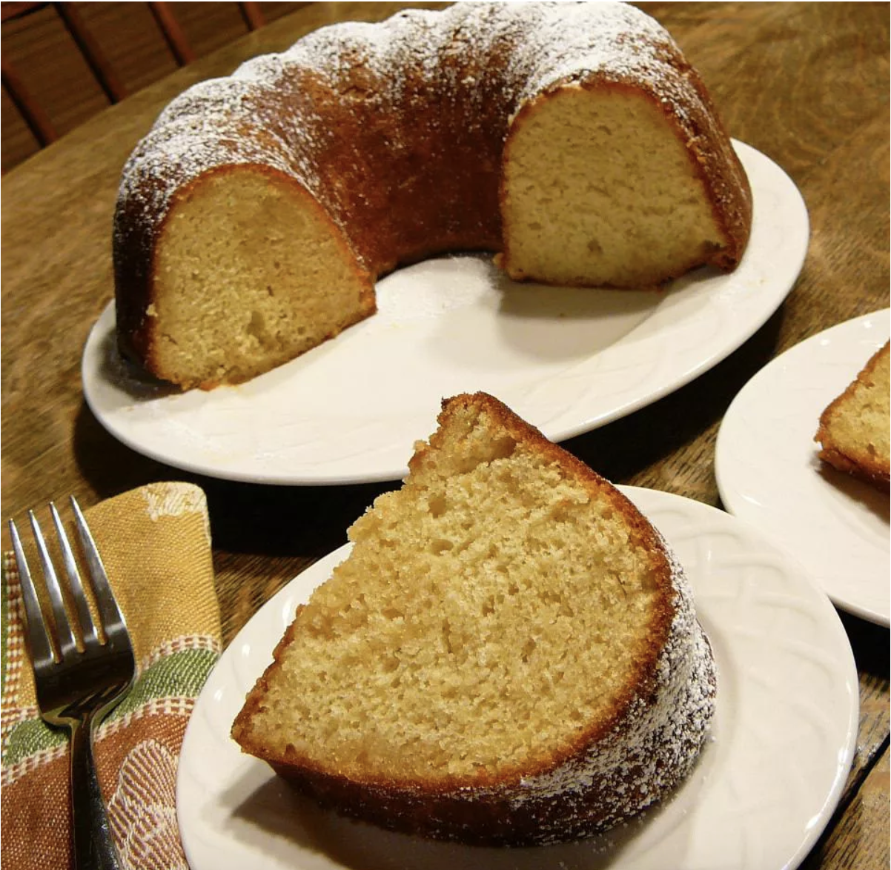

Glazed Apple Cider Cake

This is a super easy dressed-up Bundt® cake recipe that tastes like an apple cider donut!
It's definitely a fall family favorite in our house.
Ingredients:
- cooking spray
- 1 (15.25 oz) package white cake mix
- 1 cup apple cider
- 4 eggs
- 1/2 cuo butter [melted]
- 1 (4 oz) package instant vanilla pudding mix
Glaze:
- 1 cup confectioners' sugar
- 3/4 cup apple cider
Steps:
- Preheat oven to 350 degrees F (175 degrees C). Grease a fluted tube pan (such as Bundt®) with cooking spray.
- Combine cake mix, 1 cup apple cider, eggs, butter, and vanilla pudding mix in a large bowl; mix until smooth. Pour batter into the tube pan.
- Bake in the preheated oven until a toothpick inserted into the center comes out clean, about 40 minutes.
- Stir confectioners' sugar and 3/4 cup apple cider together in a small bowl to make the glaze.
- Pour glaze over the cake and let soak into the cake and down the sides of the pan, about 30 minutes. Invert onto a plate and cool completely, about 30 minutes.